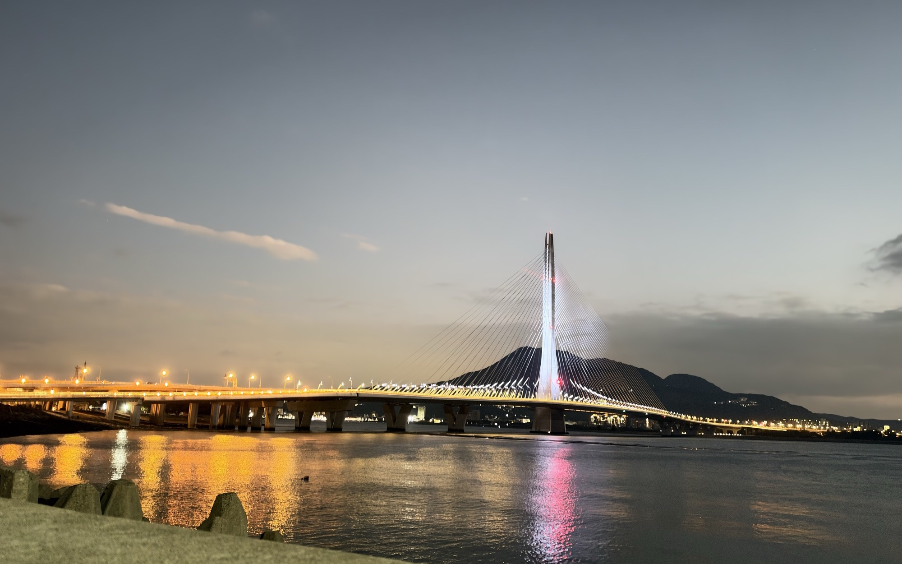

去年搭渡輪回淡水，今年直接騎上淡江大橋。從淡江租借站出發，沿金色水岸看海，再迎著河口的風過橋到八里。沒有計時、沒有競速，一起騎、一起聊、一起看風景。
位於淡水漁人碼頭旁、情人橋附近。騎自己的車來或現場租借都可以，租借站有一般自行車可租，請提前 15 分鐘到場辦理。
沙崙路 → 觀海長堤 → 公司田溪 → 海岸線回漁人碼頭 → 淡江大橋 → 十三行。去程約 15 km，回程 4 km，可在十三行脫隊。
路線是一個不走回頭路的環，順序依 Google 地圖規劃。先走沙崙路到濱海沙崙，經水管公園騎上金色水岸觀海長堤；北端折回後接公司田溪自行車道，沿溪口回到海岸線，經綠野馬術、沙崙海灘、魚藏文化館南下回漁人碼頭；接淡水觀海長堤，騎上淡江大橋到八里端的十三行文化公園吃點心，再過橋回漁人碼頭還車解散。到十三行約 15 公里，回程再約 4 公里；想留在八里的人可以在十三行自行脫隊。
點任一列可展開細節
淡江大橋位在河口，秋季東北季風強，側風會推車。橋上請降速、雙手握把、不並排、不邊騎邊拍。要拍照請在領騎指定的地方停車。